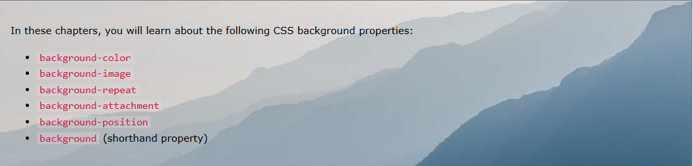

What is CSS?
CSS is the language we use to style an HTML document. CSS describes how HTML elements should be displayed. This tutorial will teach you CSS from basic to advanced. This CSS tutorial contains hundreds of CSS examples. With our online editor, you can edit the CSS, and click on a button to view the result. We recommend reading this tutorial, in the sequence listed in the menu. If you have a large screen, the menu will always be present on the left. Curabitur vehicula dictum justo nec pulvinar. Nullam imperdiet imperdiet ex, in accumsan ex. Aenean malesuada lobortis orci, vitae dictum mauris venenatis eu. Donec at luctus velit. Vestibulum eget ante urna. Duis et arcu vel ipsum convallis congue a in nunc. Ut facilisis, magna viverra euismod venenatis, elit felis sollicitudin tellus, non facilisis nibh libero nec elit.
Introduction
CSS stands for Cascading Style Sheets CSS describes how HTML elements are to be displayed on screen, paper, or in other media CSS saves a lot of work. It can control the layout of multiple web pages all at once External stylesheets are stored in CSS files CSS is used to define styles for your web pages, including the design, layout and variations in display for different devices and screen sizes. HTML was NEVER intended to contain tags for formatting a web page! HTML was created to describe the content of a web page, like: When tags like 'font', and color attributes were added to the HTML 3.2 specification, it started a nightmare for web developers. Development of large websites, where fonts and color information were added to every single page, became a long and expensive process. To solve this problem, the World Wide Web Consortium (W3C) created CSS. CSS removed the style formatting from the HTML page! The style definitions are normally saved in external .css files. With an external stylesheet file, you can change the look of an entire website by changing just one file!
Syntax
The selector points to the HTML element you want to style. The declaration block contains one or more declarations separated by semicolons. Each declaration includes a CSS property name and a value, separated by a colon. Multiple CSS declarations are separated with semicolons, and declaration blocks are surrounded by curly braces. Example Explained p is a selector in CSS (it points to the HTML element you want to style:). color is a property, and red is the property value text-align is a property, and center is the property value
{kind=link}
Selectors
CSS selectors are used to "find" (or select) the HTML elements you want to style.
We can divide CSS selectors into five categories:
Simple selectors (select elements based on name, id, class)
Combinator selectors (select elements based on a specific relationship between them)
Pseudo-class selectors (select elements based on a certain state)
Pseudo-elements selectors (select and style a part of an element)
Attribute selectors (select elements based on an attribute or attribute value)
This page will explain the most basic CSS selectors.
The class selector selects HTML elements with a specific class attribute.
To select elements with a specific class, write a period character, followed by the class name.
Curabitur vehicula dictum justo nec pulvinar. Nullam imperdiet imperdiet ex, in accumsan ex. Aenean malesuada lobortis orci, vitae dictum mauris venenatis eu. Donec at luctus velit. Vestibulum eget ante urna. Duis et arcu vel ipsum convallis congue a in nunc. Ut facilisis, magna viverra euismod venenatis, elit felis sollicitudin tellus, non facilisis nibh libero nec elit.
Curabitur vehicula dictum justo nec pulvinar. Nullam imperdiet imperdiet ex, in accumsan ex. Aenean malesuada lobortis orci, vitae dictum mauris venenatis eu. Donec at luctus velit. Vestibulum eget ante urna. Duis et arcu vel ipsum convallis congue a in nunc. Ut facilisis, magna viverra euismod venenatis, elit felis sollicitudin tellus, non facilisis nibh libero nec elit.Curabitur vehicula dictum justo nec pulvinar. Nullam imperdiet imperdiet ex, in accumsan ex. Aenean malesuada lobortis orci, vitae dictum mauris venenatis eu. Donec at luctus velit. Vestibulum eget ante urna. Duis et arcu vel ipsum convallis congue a in nunc. Ut facilisis, magna viverra euismod venenatis, elit felis sollicitudin tellus, non facilisis nibh libero nec elit.

Comments
Comments are used to explain the code, and may help when you edit the source code at a later date. Comments are ignored by browsers. Sed condimentum scelerisque sagittis. Morbi non mattis sapien, a ultricies diam. Vivamus at pharetra turpis, non placerat eros. Orci varius natoque penatibus et magnis dis parturient montes, nascetur ridiculus mus. Vestibulum aliquam fringilla quam, sit amet dignissim metus elementum at. Quisque eu dolor interdum, consequat ante eget, vestibulum tortor. Duis placerat dolor a arcu viverra, et consequat tellus venenatis. Quisque viverra nibh sem, ac ultricies purus lobortis ut. Quisque mollis interdum egestas. Vestibulum eros est, malesuada eu libero vel, consequat efficitur eros. Nullam pellentesque sollicitudin nulla ac vehicula. Praesent pretium quis massa vitae consequat. Duis eu tempus neque, eu cursus massa. Mauris viverra consectetur arcu at ornare. Sed viverra fermentum neque eu hendrerit. Vivamus faucibus tincidunt lectus, at pulvinar risus accumsan non. Aenean ultrices id mi sed feugiat. Sed enim libero, egestas consectetur ullamcorper nec, posuere a turpis. Suspendisse venenatis ante et sem mattis malesuada. Morbi volutpat justo ut sollicitudin pretium. Nullam interdum a diam a sollicitudin. Proin id orci justo. Aliquam in pellentesque dui, a luctus erat. Orci varius natoque penatibus et magnis dis parturient montes, nascetur ridiculus mus. Fusce posuere ipsum porta ipsum eleifend, vitae volutpat ex pulvinar. Curabitur vehicula dictum justo nec pulvinar. Nullam imperdiet imperdiet ex, in accumsan ex. Aenean malesuada lobortis orci, vitae dictum mauris venenatis eu. Donec at luctus velit. Vestibulum eget ante urna. Duis et arcu vel ipsum convallis congue a in nunc. Ut facilisis, magna viverra euismod venenatis, elit felis sollicitudin tellus, non facilisis nibh libero nec elit.
{kind=link}
{kind=link}
Colors and Background
Colors are specified using predefined color names, or RGB, HEX, HSL, RGBA, HSLA values. Sed condimentum scelerisque sagittis. Morbi non mattis sapien, a ultricies diam. Vivamus at pharetra turpis, non placerat eros. Orci varius natoque penatibus et magnis dis parturient montes, nascetur ridiculus mus. Vestibulum aliquam fringilla quam, sit amet dignissim metus elementum at. Quisque eu dolor interdum, consequat ante eget, vestibulum tortor. Duis placerat dolor a arcu viverra, et consequat tellus venenatis. Quisque viverra nibh sem, ac ultricies purus lobortis ut. Quisque mollis interdum egestas. Vestibulum eros est, malesuada eu libero vel, consequat efficitur eros. Nullam pellentesque sollicitudin nulla ac vehicula. Praesent pretium quis massa vitae consequat. Duis eu tempus neque, eu cursus massa.Sed condimentum scelerisque sagittis. Morbi non mattis sapien, a ultricies diam. Vivamus at pharetra turpis, non placerat eros. Orci varius natoque penatibus et magnis dis parturient montes, nascetur ridiculus mus. Vestibulum aliquam fringilla quam, sit amet dignissim metus elementum at. Quisque eu dolor interdum, consequat ante eget, vestibulum tortor. Duis placerat dolor a arcu viverra, et consequat tellus venenatis. Quisque viverra nibh sem, ac ultricies purus lobortis ut. Quisque mollis interdum egestas. Vestibulum eros est, malesuada eu libero vel, consequat efficitur eros. Nullam pellentesque sollicitudin nulla ac vehicula. Praesent pretium quis massa vitae consequat. Duis eu tempus neque, eu cursus massa. Mauris viverra consectetur arcu at ornare. Sed viverra fermentum neque eu hendrerit. Vivamus faucibus tincidunt lectus, at pulvinar risus accumsan non. Aenean ultrices id mi sed feugiat. Sed enim libero, egestas consectetur ullamcorper nec, posuere a turpis. Suspendisse venenatis ante et sem mattis malesuada. Morbi volutpat justo ut sollicitudin pretium. Nullam interdum a diam a sollicitudin. Proin id orci justo. Aliquam in pellentesque dui, a luctus erat. Orci varius natoque penatibus et magnis dis parturient montes, nascetur ridiculus mus. Fusce posuere ipsum porta ipsum eleifend, vitae volutpat ex pulvinar. Curabitur vehicula dictum justo nec pulvinar. Nullam imperdiet imperdiet ex, in accumsan ex. Aenean malesuada lobortis orci, vitae dictum mauris venenatis eu. Donec at luctus velit. Vestibulum eget ante urna. Duis et arcu vel ipsum convallis congue a in nunc. Ut facilisis, magna viverra euismod venenatis, elit felis sollicitudin tellus, non facilisis nibh libero nec elit.
{kind=link}
RGB Value
In CSS, a color can be specified as an RGB value, using this formula: rgb(red, green, blue) Each parameter (red, green, and blue) defines the intensity of the color between 0 and 255. For example, rgb(255, 0, 0) is displayed as red, because red is set to its highest value (255) and the others are set to 0. To display black, set all color parameters to 0, like this: rgb(0, 0, 0). To display white, set all color parameters to 255, like this: rgb(255, 255, 255). Experiment by mixing the RGB values below:Sed condimentum scelerisque sagittis. Morbi non mattis sapien, a ultricies diam. Vivamus at pharetra turpis, non placerat eros. Orci varius natoque penatibus et magnis dis parturient montes, nascetur ridiculus mus. Vestibulum aliquam fringilla quam, sit amet dignissim metus elementum at. Quisque eu dolor interdum, consequat ante eget, vestibulum tortor. Duis placerat dolor a arcu viverra, et consequat tellus venenatis. Quisque viverra nibh sem, ac ultricies purus lobortis ut. Quisque mollis interdum egestas. Vestibulum eros est, malesuada eu libero vel, consequat efficitur eros. Nullam pellentesque sollicitudin nulla ac vehicula. Praesent pretium quis massa vitae consequat. Duis eu tempus neque, eu cursus massa. Mauris viverra consectetur arcu at ornare. Sed viverra fermentum neque eu hendrerit. Vivamus faucibus tincidunt lectus, at pulvinar risus accumsan non. Aenean ultrices id mi sed feugiat. Sed enim libero, egestas consectetur ullamcorper nec, posuere a turpis. Suspendisse venenatis ante et sem mattis malesuada. Morbi volutpat justo ut sollicitudin pretium. Nullam interdum a diam a sollicitudin. Proin id orci justo. Aliquam in pellentesque dui, a luctus erat. Orci varius natoque penatibus et magnis dis parturient montes, nascetur ridiculus mus. Fusce posuere ipsum porta ipsum eleifend, vitae volutpat ex pulvinar. Curabitur vehicula dictum justo nec pulvinar. Nullam imperdiet imperdiet ex, in accumsan ex. Aenean malesuada lobortis orci, vitae dictum mauris venenatis eu. Donec at luctus velit. Vestibulum eget ante urna. Duis et arcu vel ipsum convallis congue a in nunc. Ut facilisis, magna viverra euismod venenatis, elit felis sollicitudin tellus, non facilisis nibh libero nec elit.
Colors
In CSS, a color can be specified by using a predefined color name: You can set the background color for HTML elements: CSS/HTML support 140 standard color names In CSS, colors can also be specified using RGB values, HEX values, HSL values, RGBA values, and HSLA values: Same as color name "Tomato":Sed condimentum scelerisque sagittis. Morbi non mattis sapien, a ultricies diam. Vivamus at pharetra turpis, non placerat eros. Orci varius natoque penatibus et magnis dis parturient montes, nascetur ridiculus mus. Vestibulum aliquam fringilla quam, sit amet dignissim metus elementum at. Quisque eu dolor interdum, consequat ante eget, vestibulum tortor. Duis placerat dolor a arcu viverra, et consequat tellus venenatis. Quisque viverra nibh sem, ac ultricies purus lobortis ut. Quisque mollis interdum egestas. Vestibulum eros est, malesuada eu libero vel, consequat efficitur eros. Nullam pellentesque sollicitudin nulla ac vehicula. Praesent pretium quis massa vitae consequat. Duis eu tempus neque, eu cursus massa. Mauris viverra consectetur arcu at ornare. Sed viverra fermentum neque eu hendrerit. Vivamus faucibus tincidunt lectus, at pulvinar risus accumsan non. Aenean ultrices id mi sed feugiat. Sed enim libero, egestas consectetur ullamcorper nec, posuere a turpis. Suspendisse venenatis ante et sem mattis malesuada. Morbi volutpat justo ut sollicitudin pretium. Nullam interdum a diam a sollicitudin. Proin id orci justo. Aliquam in pellentesque dui, a luctus erat. Orci varius natoque penatibus et magnis dis parturient montes, nascetur ridiculus mus. Fusce posuere ipsum porta ipsum eleifend, vitae volutpat ex pulvinar. Curabitur vehicula dictum justo nec pulvinar. Nullam imperdiet imperdiet ex, in accumsan ex. Aenean malesuada lobortis orci, vitae dictum mauris venenatis eu. Donec at luctus velit. Vestibulum eget ante urna. Duis et arcu vel ipsum convallis congue a in nunc. Ut facilisis, magna viverra euismod venenatis, elit felis sollicitudin tellus, non facilisis nibh libero nec elit.
{kind=link}
Background
The CSS background properties are used to add background effects for elements. The background-color property specifies the background color of an element. With CSS, a color is most often specified by: a valid color name - like "red" a HEX value - like "#ff0000" an RGB value - like "rgb(255,0,0)" Look at CSS Color Values for a complete list of possible color values.Sed condimentum scelerisque sagittis. Morbi non mattis sapien, a ultricies diam. Vivamus at pharetra turpis, non placerat eros. Orci varius natoque penatibus et magnis dis parturient montes, nascetur ridiculus mus. Vestibulum aliquam fringilla quam, sit amet dignissim metus elementum at. Quisque eu dolor interdum, consequat ante eget, vestibulum tortor. Duis placerat dolor a arcu viverra, et consequat tellus venenatis. Quisque viverra nibh sem, ac ultricies purus lobortis ut. Quisque mollis interdum egestas. Vestibulum eros est, malesuada eu libero vel, consequat efficitur eros. Nullam pellentesque sollicitudin nulla ac vehicula. Praesent pretium quis massa vitae consequat. Duis eu tempus neque, eu cursus massa.
Background Image
The background-image property specifies an image to use as the background of an element. By default, the image is repeated so it covers the entire element. Sed condimentum scelerisque sagittis. Morbi non mattis sapien, a ultricies diam. Vivamus at pharetra turpis, non placerat eros. Orci varius natoque penatibus et magnis dis parturient montes, nascetur ridiculus mus. Vestibulum aliquam fringilla quam, sit amet dignissim metus elementum at. Quisque eu dolor interdum, consequat ante eget, vestibulum tortor. Duis placerat dolor a arcu viverra, et consequat tellus venenatis. Quisque viverra nibh sem, ac ultricies purus lobortis ut. Quisque mollis interdum egestas. Vestibulum eros est, malesuada eu libero vel, consequat efficitur eros. Nullam pellentesque sollicitudin nulla ac vehicula. Praesent pretium quis massa vitae consequat. Duis eu tempus neque, eu cursus massa.Sed condimentum scelerisque sagittis. Morbi non mattis sapien, a ultricies diam. Vivamus at pharetra turpis, non placerat eros. Orci varius natoque penatibus et magnis dis parturient montes, nascetur ridiculus mus. Vestibulum aliquam fringilla quam, sit amet dignissim metus elementum at. Quisque eu dolor interdum, consequat ante eget, vestibulum tortor. Duis placerat dolor a arcu viverra, et consequat tellus venenatis. Quisque viverra nibh sem, ac ultricies purus lobortis ut. Quisque mollis interdum egestas. Vestibulum eros est, malesuada eu libero vel, consequat efficitur eros. Nullam pellentesque sollicitudin nulla ac vehicula. Praesent pretium quis massa vitae consequat. Duis eu tempus neque, eu cursus massa.
{kind=link}
Background Repeat
By default, the background-image property repeats an image both horizontally and vertically. Sed condimentum scelerisque sagittis. Morbi non mattis sapien, a ultricies diam. Vivamus at pharetra turpis, non placerat eros. Orci varius natoque penatibus et magnis dis parturient montes, nascetur ridiculus mus. Vestibulum aliquam fringilla quam, sit amet dignissim metus elementum at. Quisque eu dolor interdum, consequat ante eget, vestibulum tortor. Duis placerat dolor a arcu viverra, et consequat tellus venenatis. Quisque viverra nibh sem, ac ultricies purus lobortis ut. Quisque mollis interdum egestas. Vestibulum eros est, malesuada eu libero vel, consequat efficitur eros. Nullam pellentesque sollicitudin nulla ac vehicula. Praesent pretium quis massa vitae consequat. Duis eu tempus neque, eu cursus massa. Some images should be repeated only horizontally or vertically, or they will look strange, like this:Sed condimentum scelerisque sagittis. Morbi non mattis sapien, a ultricies diam. Vivamus at pharetra turpis, non placerat eros. Orci varius natoque penatibus et magnis dis parturient montes, nascetur ridiculus mus. Vestibulum aliquam fringilla quam, sit amet dignissim metus elementum at. Quisque eu dolor interdum, consequat ante eget, vestibulum tortor. Duis placerat dolor a arcu viverra, et consequat tellus venenatis. Quisque viverra nibh sem, ac ultricies purus lobortis ut. Quisque mollis interdum egestas. Vestibulum eros est, malesuada eu libero vel, consequat efficitur eros. Nullam pellentesque sollicitudin nulla ac vehicula. Praesent pretium quis massa vitae consequat. Duis eu tempus neque, eu cursus massa. 
{kind=link}
{kind=link}
Borders
The CSS border properties allow you to specify the style, width, and color of an element's border. CSS Border Style The border-style property specifies what kind of border to display. The following values are allowed: dotted - Defines a dotted border dashed - Defines a dashed border solid - Defines a solid border double - Defines a double border groove - Defines a 3D grooved border. The effect depends on the border-color value ridge - Defines a 3D ridged border. The effect depends on the border-color value inset - Defines a 3D inset border. The effect depends on the border-color value outset - Defines a 3D outset border. The effect depends on the border-color value none - Defines no border hidden - Defines a hidden border The border-style property can have from one to four values (for the top border, right border, bottom border, and the left border).
{kind=link}
Margins
Margins are used to create space around elements, outside of any defined borders.
The CSS margin properties are used to create space around elements, outside of any defined borders.
With CSS, you have full control over the margins. There are properties for setting the margin for each side of an element (top, right, bottom, and left).
The CSS margin properties are used to create space around elements, outside of any defined borders.
With CSS, you have full control over the margins. There are properties for setting the margin for each side of an element (top, right, bottom, and left).
To shorten the code, it is possible to specify all the margin properties in one property.
The margin property is a shorthand property for the following individual margin properties:
margin-top
margin-right
margin-bottom
margin-left
So, here is how it works:
If the margin property has four values:
margin: 25px 50px 75px 100px;
top margin is 25px
right margin is 50px
bottom margin is 75px
left margin is 100px

Paddings
Padding is used to create space around an element's content, inside of any defined borders. The CSS padding properties are used to generate space around an element's content, inside of any defined borders. With CSS, you have full control over the padding. There are properties for setting the padding for each side of an element (top, right, bottom, and left). CSS has properties for specifying the padding for each side of an element: All the padding properties can have the following values: length - specifies a padding in px, pt, cm, etc. % - specifies a padding in % of the width of the containing element inherit - specifies that the padding should be inherited from the parent element Note: Negative values are not allowed. The CSS width property specifies the width of the element's content area. The content area is the portion inside the padding, border, and margin of an element (the box model). So, if an element has a specified width, the padding added to that element will be added to the total width of the element. This is often an undesirable result. To keep the width at 300px, no matter the amount of padding, you can use the box-sizing property. This causes the element to maintain its actual width; if you increase
{kind=link}
CSS Height, Width and Max-width
The CSS height and width properties are used to set the height and width of an element. The CSS max-width property is used to set the maximum width of an element. The height and width properties are used to set the height and width of an element. The height and width properties do not include padding, borders, or margins. It sets the height/width of the area inside the padding, border, and margin of the element. The height and width properties may have the following values: The max-width property is used to set the maximum width of an element. The max-width can be specified in length values, like px, cm, etc., or in percent (%) of the containing block, or set to none (this is default. Means that there is no maximum width). The problem with the above occurs when the browser window is smaller than the width of the element (500px). The browser then adds a horizontal scrollbar to the page. Using max-width instead, in this situation, will improve the browser's handling of small windows. Tip: Drag the browser window to smaller than 500px wide, to see the difference between the two divs! Note: If you for some reason use both the width property and the max-width property on the same element, and the value of the width property is larger than the max-width property; the max-width property will be used (and the width property will be ignored). As mentioned in the previous chapter; a block-level element always takes up the full width available (stretches out to the left and right as far as it can). Setting the width of a block-level element will prevent it from stretching out to the edges of its container. Then, you can set the margins to auto, to horizontally center the element within its container. The element will take up the specified width, and the remaining space will be split equally between the two margins. Note: The problem with the above occurs when the browser window is smaller than the width of the element. The browser then adds
{kind=link}
CSS Box Model
In CSS, the term "box model" is used when talking about design and layout The CSS box model is essentially a box that wraps around every HTML element. It consists of: content, padding, borders and margins. The image below illustrates the box model: Explanation of the different parts: Content - The content of the box, where text and images appear Padding - Clears an area around the content. The padding is transparent Border - A border that goes around the padding and content Margin - Clears an area outside the border. The margin is transparent The box model allows us to add a border around elements, and to define space between elements. In order to set the width and height of an element correctly in all browsers, you need to know how the box model works. Important: When you set the width and height properties of an element with CSS, you just set the width and height of the content area. To calculate the total width and height of Mauris viverra consectetur arcu at ornare. Sed viverra fermentum neque eu hendrerit. Vivamus faucibus tincidunt lectus, at pulvinar risus accumsan non. Aenean ultrices id mi sed feugiat. Sed enim libero, egestas consectetur ullamcorper nec, posuere a turpis. Suspendisse venenatis ante et sem mattis malesuada. Morbi volutpat justo ut sollicitudin pretium. Nullam interdum a diam a sollicitudin. Proin id orci justo. Aliquam in pellentesque dui, a luctus erat. Orci varius natoque penatibus et magnis dis parturient montes, nascetur ridiculus mus. Fusce posuere ipsum porta ipsum eleifend, vitae volutpat ex pulvinar.Mauris viverra consectetur arcu at ornare. Sed viverra fermentum neque eu hendrerit. Vivamus faucibus tincidunt lectus, at pulvinar risus accumsan non. Aenean ultrices id mi sed feugiat. Sed enim libero, egestas consectetur ullamcorper nec, posuere a turpis. Suspendisse venenatis ante et sem mattis malesuada. Morbi volutpat justo ut sollicitudin pretium. Nullam interdum a diam a sollicitudin. Proin id orci justo. Aliquam in pellentesque dui, a luctus erat. Orci varius natoque penatibus et magnis dis parturient montes, nascetur ridiculus mus. Fusce posuere ipsum porta ipsum eleifend, vitae volutpat ex pulvinar.Mauris viverra consectetur arcu at ornare. Sed viverra fermentum neque eu hendrerit. Vivamus faucibus tincidunt lectus, at pulvinar risus accumsan non. Aenean ultrices id mi sed feugiat. Sed enim libero, egestas consectetur ullamcorper nec, posuere a turpis. Suspendisse venenatis ante et sem mattis malesuada. Morbi volutpat justo ut sollicitudin pretium. Nullam interdum a diam a sollicitudin. Proin id orci justo. Aliquam in pellentesque dui, a luctus erat. Orci varius natoque penatibus
{kind=link}
CSS Links
Links can be styled with any CSS property (e.g. color, font-family, background, etc.). In addition, links can be styled differently depending on what state they are in. The four links states are: a:link - a normal, unvisited link a:visited - a link the user has visited a:hover - a link when the user mouses over it a:active - a link the moment it is clickedSed condimentum scelerisque sagittis. Morbi non mattis sapien, a ultricies diam. Vivamus at pharetra turpis, non placerat eros. Orci varius natoque penatibus et magnis dis parturient montes, nascetur ridiculus mus. Vestibulum aliquam fringilla quam, sit amet dignissim metus elementum at. Quisque eu dolor interdum, consequat ante eget, vestibulum tortor. Duis placerat dolor a arcu viverra, et consequat tellus venenatis. Quisque viverra nibh sem, ac ultricies purus lobortis ut. Quisque mollis interdum egestas. Vestibulum eros est, malesuada eu libero vel, consequat efficitur eros. Nullam pellentesque sollicitudin nulla ac vehicula. Praesent pretium quis massa vitae consequat. Duis eu tempus neque, eu cursus massa. Mauris viverra consectetur arcu at ornare. Sed viverra fermentum neque eu hendrerit. Vivamus faucibus tincidunt lectus, at pulvinar risus accumsan non. Aenean ultrices id mi sed feugiat. Sed enim libero, egestas consectetur ullamcorper nec, posuere a turpis. Suspendisse venenatis ante et sem mattis malesuada. Morbi volutpat justo ut sollicitudin pretium. Nullam interdum a diam a sollicitudin. Proin id orci justo. Aliquam in pellentesque dui, a luctus erat. Orci varius natoque penatibus et magnis dis parturient montes, nascetur ridiculus mus. Fusce posuere ipsum porta ipsum eleifend, vitae volutpat ex pulvinar. Curabitur vehicula dictum justo nec pulvinar. Nullam imperdiet imperdiet ex, in accumsan ex. Aenean malesuada lobortis orci, vitae dictum mauris venenatis eu. Donec at luctus velit. Vestibulum eget ante urna. Duis et arcu vel ipsum convallis congue a in nunc. Ut facilisis, magna viverra euismod venenatis, elit felis sollicitudin tellus, non facilisis nibh libero nec elit.
{kind=link}
Lists and tables
Lists
In HTML, there are two main types of lists: unordered lists ul - the list items are marked with bullets ordered lists ol - the list items are marked with numbers or letters The CSS list properties allow you to: Set different list item markers for ordered lists Set different list item markers for unordered lists Set an image as the list item marker Add background colors to lists and list items The list-style-type property specifies the type of list item marker. The following example shows some of the available list item markers: The list-style-type:none property can also be used to remove the markers/bullets. Note that the list also has default margin and padding. To remove this, add margin:0 and padding:0 The list-style property is a shorthand property. It is used to set all the list properties in one declaration: When using the shorthand property, the order of the property values are: list-style-type (if a list-style-image is specified, the value of this property will be displayed if the image for some reason cannot be displayed) list-style-position (specifies whether the list-item markers should appear inside or outside the content flow) list-style-image (specifies an image as the list item marker) If one of the property values above is missing, the default value for the missing property will be inserted, if any. We can also style lists with colors, to make them look a little more interesting. Anything added to the ol or ul tag, affects the entire list, while properties added to the li tag will affect the individual list items
{kind=link}
Tables
The look of an HTML table can be greatly improved with CSS. To specify table borders in CSS, use the border property. The example below specifies a solid border for table, th, and td elements The table above might seem small in some cases. If you need a table that should span the entire screen (full-width), add width: 100% to the table element: The width and height of a table are defined by the width and height properties. The example below sets the width of the table to 100%, and the height of the th elements to 70px To create a table that should only span half the page, use width: 50%: The text-align property sets the horizontal alignment (like left, right, or center) of the content in th or td. By default, the content of th elements are center-aligned and the content of td elements are left-aligned. To center-align the content of td elements as well, use text-align: center To left-align the content, force the alignment of th elements to be left-aligned, with the text-align: left property The vertical-align property sets the vertical alignment (like top, bottom, or middle) of the content in th or td. By default, the vertical alignment of the content in a table is middle (for both th and td elements). The following example sets the vertical text alignment to bottom for td elements To control the space between the border and the content in a table, use the padding property on td and th elements Add the border-bottom property to th and td for horizontal dividers Use the :hover selector on tr to highlight table rows on mouse over For zebra-striped tables, use the nth-child() selector and add a background-color to all even (or odd) table rows The example below specifies the background color and text color of th elements A responsive table will display a horizontal scroll bar if the screen is too small to display the full content Add a container element (like div) with overflow-x:auto around the table element to make it responsive
{kind=link}
{kind=link}
{kind=link}